Five modules, one motor
Five modules follow one induction motor through one CDIO cycle. In Induction, trainees predict how the kit motor will perform. In Build and Wind they make it. In Drive they run it and measure it against the prediction.
How the modules fit together
Each module states the kit state it starts from and the state it leaves. A module taken on its own starts from a prepared kit and a one-page recap.
- 01
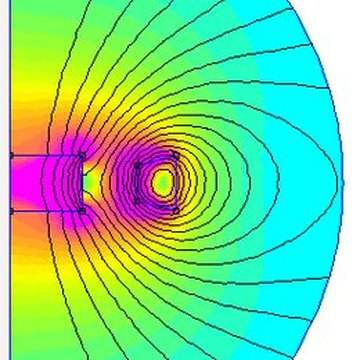
MTM-01FoundationFields, iron, magnets, induction and force, in FEMM and on the bench - 02
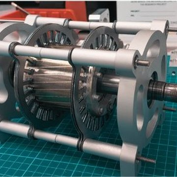
MTM-02-IMInductionOpen the kit motor and predict its torque, current and efficiency - 03
 MTM-03-IMBuildStack the core, fit the cage rotor, assemble a motor that turns freely
MTM-03-IMBuildStack the core, fit the cage rotor, assemble a motor that turns freely - 04
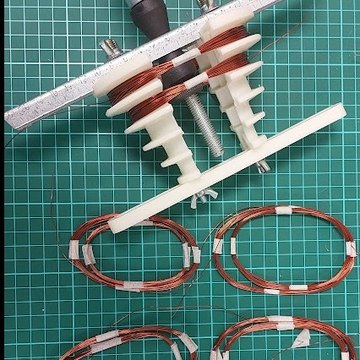
MTM-04WindDesign, wind, insert and test the three-phase stator winding - 05
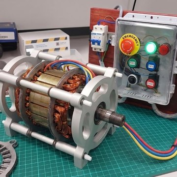
MTM-05-IMDrivePower it up from DOL, star-delta and a VFD, and measure it
| Module | CDIO phase | Kit state in | Kit state out | App |
|---|---|---|---|---|
| MTM-01 Foundation | Conceive | Bench apps and magnets | No change | Force |
| MTM-02-IM Induction | Conceive → Design | Real disassembled motor plus the assembled trainer | No change | Slip Lab |
| MTM-03-IM Build | Design → Implement | Loose laminations, die-cast rotor, shaft, end shields | Stacked stator core, rotor fitted, turning freely | CoreSim |
| MTM-04 Wind | Design → Implement | Stacked core (stand-alone: a spare core) | Wound, connected and tested stator | Winding Assistant |
| MTM-05-IM Drive | Operate | Wound stator and rotor (stand-alone: a factory-built kit motor) | A running motor with measured parameters | Drive Console |
Brief, Explore, Do, Check
- BriefThe trainer's slides: the idea and its equations
- ExploreThe module's app: a model you can change
- DoThe kit or the bench: make it, measure it
- CheckYour prediction against the result, and a short quiz
Each module has four or five sessions. The trainer's slides, the trainee's workbook and the course hub use the same four steps, and every value goes into the Motor Logbook with its data label: Confirmed, Inferred, Training target or Not available.
Foundation: Electromagnetic foundations
Fields from current, iron and inductance, permanent magnets, induction, and force and torque: the five ideas every electric machine is built on, each explored in a FEMM model and checked on the bench.
- Kit state in
- Bench apps and magnets
- Kit state out
- No change
- App
- Force (MLS-FRC)
- Main programme outcomes
- Knowledge (i) · Problem Analysis (ii) · Tool Usage (v)
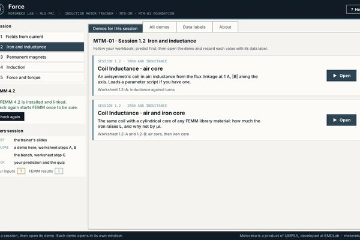
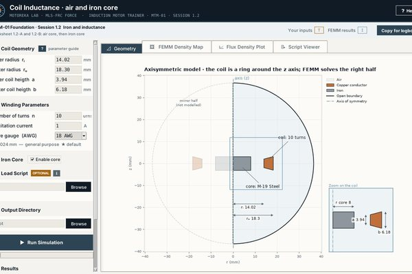
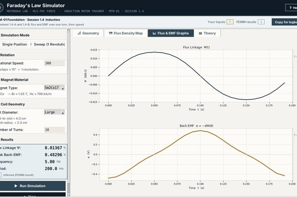
- 1.1Fields from currentAmpère Wire Demo
- 1.2Iron and inductanceCoil Inductance, air and iron core
- 1.3Permanent magnetsPM Flux Simulator
- 1.4InductionFaraday's Law Simulator
- 1.5Force and torqueLorentz Force & Torque; Energy Method EI Core
Induction: How the induction motor works
Take the kit motor apart, follow the rotating field, and predict its torque, current and efficiency from slip, the equivalent circuit and test-derived parameters.
- Kit state in
- Real disassembled motor plus the assembled trainer
- Kit state out
- No change
- App
- Slip Lab (MLS-SLP-IM)
- Main programme outcomes
- Knowledge (i) · Problem Analysis (ii) · Investigation (iv) · Tool Usage (v)
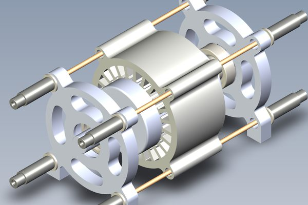
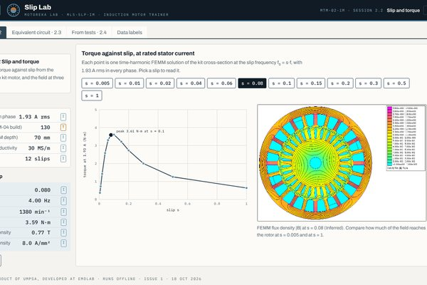
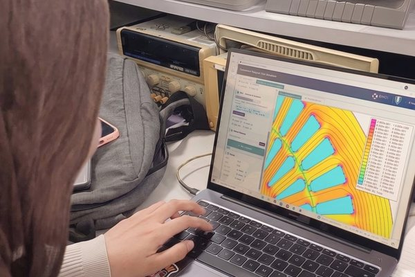
- 2.1Anatomy and the rotating field
- 2.2Slip and torqueFEMM slip sweep on IM.FEM
- 2.3Equivalent circuit and power flow
- 2.4From tests to parametersIEC 60034-28 method
Build: Core, cage and assembly
Electrical steel and its losses, stacking the stator core, inspecting the die-cast cage rotor and assembling the machine so that it turns freely on its bearings.
- Kit state in
- Loose laminations, die-cast rotor, shaft, end shields
- Kit state out
- Stacked stator core, rotor fitted, turning freely
- App
- CoreSim (MLS-CRS)
- Main programme outcomes
- Design/Development of Solutions (iii) · The Engineering Technologist and the World (vi) · Project Management and Finance (x)
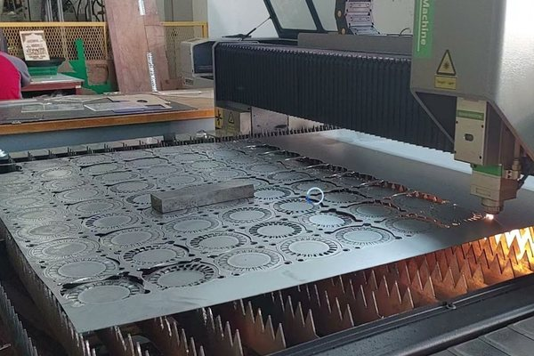
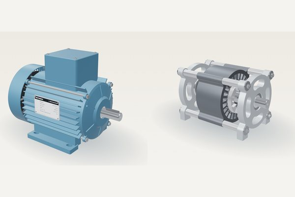
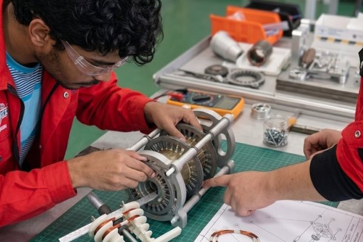
- 3.1Electrical steel and losses
- 3.2Making and stacking the core
- 3.3The rotor cage
- 3.4Mechanical assembly
Wind: Three-phase stator winding
Design a three-phase winding for the 24-slot stator, draw it with IEC 60034-8 terminal markings, wind and insert the coils on the winding machine, then connect and test the finished stator.
- Kit state in
- Stacked core (stand-alone: a spare core)
- Kit state out
- Wound, connected and tested stator
- App
- Winding Assistant (MLS-WND)
- Main programme outcomes
- Design/Development of Solutions (iii) · Tool Usage (v) · Individual and Collaborative Team Work (viii) · Communications (ix)
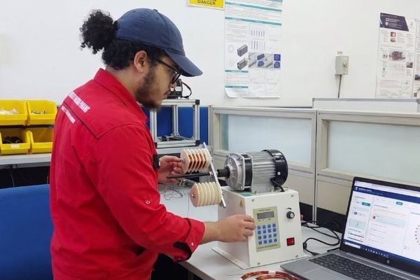
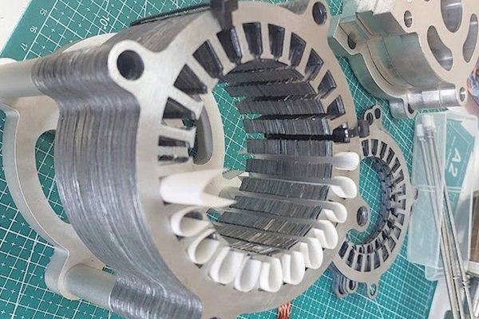
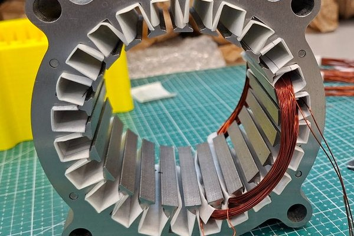
- 4.1Winding design
- 4.2Coils, wire and IEC diagrams
- 4.3Wind and insertWinding machine
- 4.4Connect and test
Drive: Start, control and measure
Close up the motor and power it for the first time, start it direct-on-line and star-delta, run it from a VFD, and measure its parameters against the prediction made in Induction.
- Kit state in
- Wound stator and rotor (stand-alone: a factory-built kit motor)
- Kit state out
- A running motor with measured parameters
- App
- Drive Console (MLS-DRV-IM)
- Main programme outcomes
- Investigation (iv) · Ethics (vii) · Individual and Collaborative Team Work (viii) · Communications (ix) · Life Long Learning (xi)
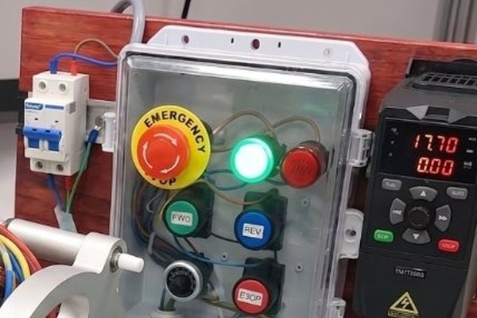
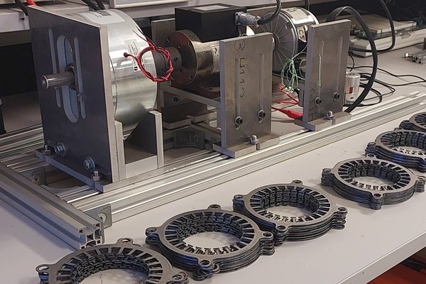
- 5.1Close-up and first power
- 5.2DOL and star-delta3-phase variac at 230 V
- 5.3VFDES-F600-0.75, single-phase input, three-wire control
- 5.4Measure your motorNo-load and locked-rotor tests
For trainees and for trainers
Module workbook
The notes, the worksheet for every session and the session quizzes in one book, under the same four headings as the slides.
Slides and Motor Logbook
The session slides as a PDF for revision, and one logbook page per module in a booklet that runs across all five.
The module's app
A Motoreka Lab app with its quick guide, used in the Explore step of each session.
Instructor pack
Editable slides with speaker notes, answer keys, facilitator notes, the practical rubric, the end-of-module test and the outcome mapping sheet. Given at train-the-trainer.
One kit, three programme types
Worksheet extensions and test questions are written at three problem levels. The outcomes are mapped to the eleven outcomes i–xi shared by ETAC and EAC.
| Programme | Standard | Problem level |
|---|---|---|
| Engineering | EAC Engineering Programme Accreditation Standard 2024 | Complex problems |
| Engineering Technology | ETAC Engineering Technology Programme Accreditation Standard 2024 | Broadly-defined problems |
| Technology | MBOT with MQA | To be confirmed |
Talk to the team at EMDLab
Tell us what you teach, build or need designed. We reply within one working day.